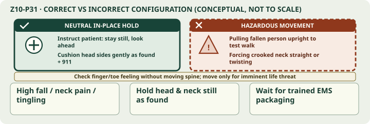

Z10-P31 · Wilderness medicine · New manuscript
Maintain spinal motion restriction after high-force falls or impacts
Minimize secondary spinal-cord injury by keeping an injured person's head, neck, and back still until EMS arrives.
When it applies · Falls from height, diving into shallow water, falling tree limbs, sled/snowmobile/bike crashes, or any neck/back pain or tingling after trauma.
Equipment · Rolled jackets/packs for gentle side-of-head cushioning, ground insulation where reachable without shifting, and emergency comms.

Actions
- Instruct an alert patient immediately to stay completely still and look straight ahead—do NOT twist, nod, sit up, or let bystanders pull them to their feet after a high-mechanism impact.[M11, T01]
- Gently stabilize the head in the neutral position found using hands or snug rolled clothing beside the ears (never force a crooked neck straight or apply traction) while activating 911/SAR.[M11, T02]
- Check whether the patient can feel and wiggle fingers and toes without moving their spine, keep them protected from wind/cold, and leave definitive spinal packaging to trained EMS crews.[M11, M09, E05]
Failure recognition · Pulling a fallen climber upright to "check if they can walk" when they complain of midline neck pain and numb fingers.[M11]
Verify · Confirm the head and spine remained unmoved, sensation/movement in extremities was noted, and EMS knows spinal precautions are active.[M11, M20]
Stop or change course · Move a suspected spinal-injury patient ONLY if immediate life-threatening scene danger or airway obstruction makes staying put fatal.[M11, T01]
Evidence and editorial notes
- E05 · NWS · What To Do If You're Caught in a Winter Storm (current web edition)
- Section: Outside and find shelter · Conditions: Cold, wet or windy winter conditions
Support: Block wind, stay dry and keep off cold ground. Keep exposure reduction separate from making a fire.
Limitations: Improvised windbreaks do not provide rated thermal protection or snow-load capacity. · Conflicting evidence: None; aligns with CDC-H.
Editorial note: Separates wind, ground, and moisture heat-loss pathways. · Specialist reviewer: Cold-weather shelter specialist
Primary source · checked 2026-11-24 - M09 · NIH / MedlinePlus · Fractures (current web edition)
- Section: Suspected Fracture Stabilization and Neurovascular Checks · Conditions: Suspected limb fracture, deformity, or inability to bear weight
Support: Immobilize the injured limb in the position found using padded support without attempting to straighten visibly deformed bones; check circulation, sensation, and movement beyond the injury and arrange evacuation.
Limitations: Open fractures (bone breaking skin) and femur/pelvis injuries carry high bleeding and infection risk requiring urgent EMS. · Conflicting evidence: None; forbids lay fracture reduction in routine field care.
Editorial note: Anchors splinting, neurovascular checks, and evacuation urgency in Z10. · Specialist reviewer: Orthopedics and wilderness medicine
Primary source · checked 2026-11-24 - M11 · NIH / MedlinePlus · Head Injuries (current web edition)
- Section: Head Injury, Concussion Signs, and Spinal Precautions · Conditions: Falls, struck-by-branch trauma, or head impact with confusion, vomiting, worsening headache, or neck pain
Support: Assume possible head or spinal injury after significant impact; keep the head and neck still, monitor level of responsiveness, call EMS for red flags (loss of consciousness, repeated vomiting, unequal pupils, confusion, neck pain), and never resume hazardous travel.
Limitations: Delayed intracranial bleeding can worsen hours after an initially mild-seeming impact. · Conflicting evidence: None; mandates conservative evacuation for any neurologic red flag.
Editorial note: Grounds head-trauma, concussion, and spinal-motion-restriction cards. · Specialist reviewer: Neurotrauma and wilderness EMS
Primary source · checked 2026-11-24 - M20 · NIH / MedlinePlus · First Aid Overview (current web edition)
- Section: Lay First-Aid Scope, Kit Readiness, and Documentation · Conditions: Pre-trip kit preparation and remote patient monitoring
Support: Maintain an inspected, unexpired first-aid kit matched to your actual training, keep written patient observations (time, responsiveness, breathing, symptoms, interventions) for EMS handoff, and practice skills in certified courses.
Limitations: Carrying advanced medical instruments without clinical training adds risk rather than capability. · Conflicting evidence: None; aligns with ARC and NPS-K.
Editorial note: Anchors kit sizing, SOAP-style lay observation logs, and scope-of-practice cards. · Specialist reviewer: Wilderness EMS and clinical education
Primary source · checked 2026-11-24 - T01 · American Red Cross · First Aid Steps (current web edition)
- Section: First Aid Steps > Check the scene; check the person · Conditions: Lay responder in United States; assess safety before contact
Support: Check scene safety, responsiveness, breathing and immediately life-threatening conditions.
Limitations: Lay guidance does not replace advanced clinical or rescue protocols. · Conflicting evidence: None; universal first-response opening gate.
Editorial note: Anchors scene-safety-first rule across Z01. · Specialist reviewer: EMS and wilderness medicine
Primary source · checked 2026-11-24 - T02 · American Red Cross · First Aid Steps (current web edition)
- Section: First Aid Steps > Call 9-1-1 · Conditions: Lay emergency response to unresponsiveness, abnormal breathing or severe bleeding
Support: Activate EMS and get needed equipment. Follow dispatcher directions and act within training.
Limitations: Remote locations may delay EMS arrival, requiring sustained stabilization after activation. · Conflicting evidence: None; aligns with NPS-E.
Editorial note: Mandates early emergency activation and dispatcher adherence. · Specialist reviewer: EMS and wilderness medicine
Primary source · checked 2026-11-24
Source lineage · NIH MedlinePlus Head Injuries and Fractures; new manuscript · Classification · New manuscript.